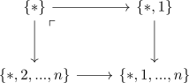
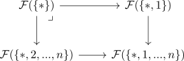
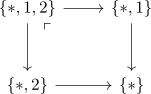
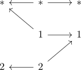
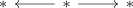
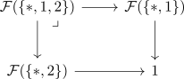

forgetful functor from spectrum objects to cartesian commutative groups
Proposition
Let $\mathcal{C}$ be a infinity category with terminal object Then the forgetful functor from the category of spectrum objects to the category of cartesian commutative groups is given by <precomposition> for the inclusion of category Fin* to category of pointed finite anima
where
Proof
Let $\mathcal{F}: \mathrm{Spc}_* \rightarrow \mathcal{C}$ be a reduced excisive functor
monoid
todo: some coslice argument
using the quillen formula for infinity colimits in Anima / homotopy pushout and single cofibration consider

which is an pushout as the morphisms out of $*$ are is a cofibrations (cf. cofibration between simplicial sets as monomorphism, Kan-quillen Model structure on sSet )
Then since $\mathcal{F}$ is excisive, we get the pullback

and since $\mathcal{F}$ is reduced, this simplifies to
Then by some <pullback with terminal object> we get an equivalence
and by induction
not 100% sure
- claim: pullback with terminal object as product / pushout with initial object as coproduct (hopefully works by passing to hocat)
- correct unstraightening of the functor
- colimits in the coslice category
group
hopefully

is a pushout where
proof as pushout
using Lurie theorem about colimits in Anima and unstraightening functor of cocartesian fibrations we get

as simplicial set over

which is cocartesian, since we can lift $* \rightarrow *$ to the morphism $* \rightarrow *$
which after applying the geometric realization is a contractible space, hence was a weakly contractible simplicial set
Then the colimit is given by
where $\vert - \vert$ as kan replacement stays (weakly) contractible, hence
continuation
and then

is a pullback, showing that
is an equivalence
alternative
- nerve fucntor
preserves limits
- some localization argument of